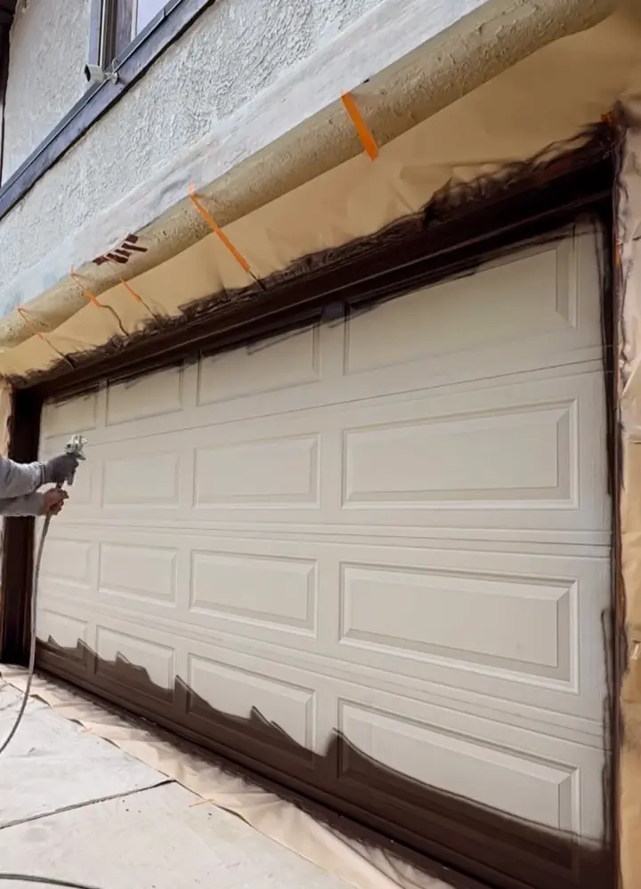
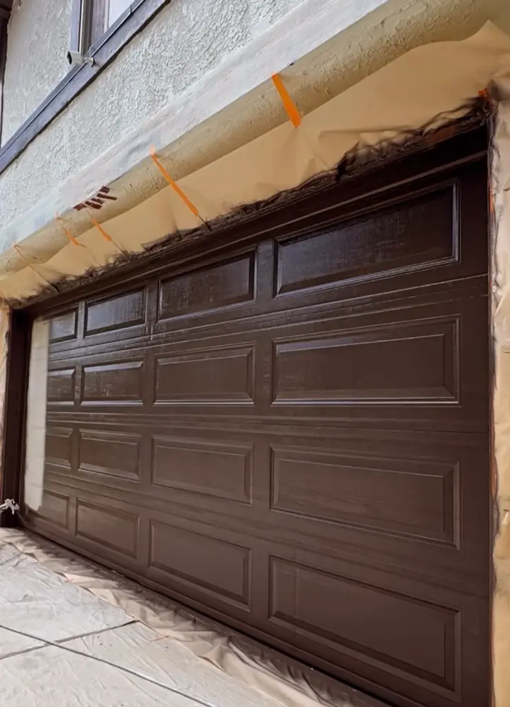
Garage door
Cream to rich chocolate, masked tight and sprayed even.
Father and son painters who prep it right and leave it spotless.
Real job. Real crew.
Real jobs, straight from Armando’s phone. Flip each one, then swipe to the next.


Cream to rich chocolate, masked tight and sprayed even.
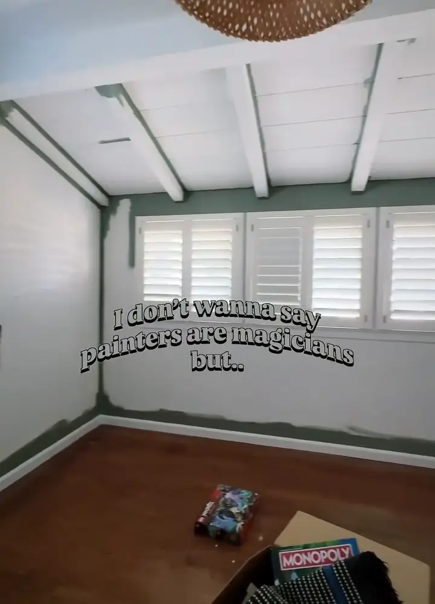
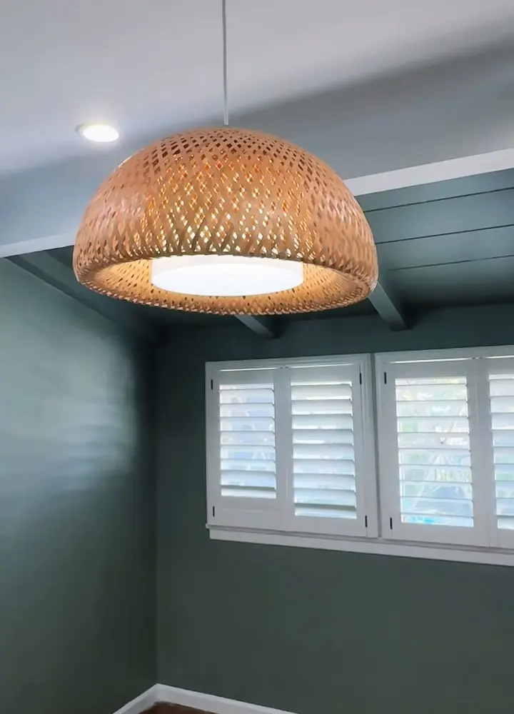
“I don’t wanna say painters are magicians, but…”
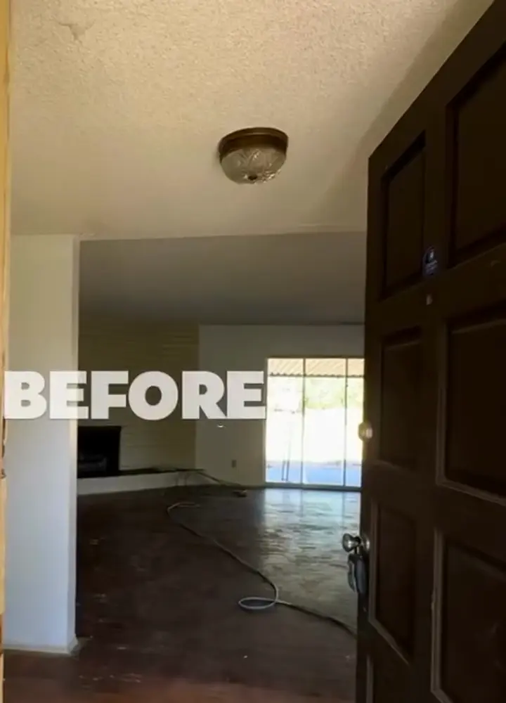
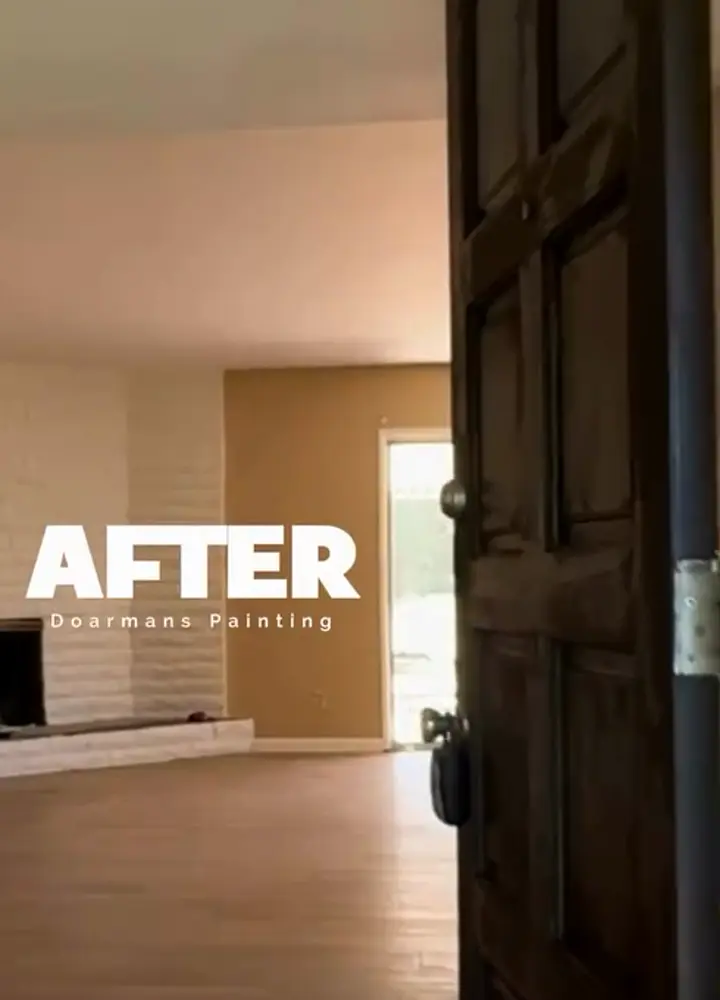
Repairs, new texture and fresh paint through the whole house.
Plus the repairs most painters skip. Pick a chip to see it on a real job.
Walls, ceilings, trim and doors. Everything covered, cleaned up every evening.
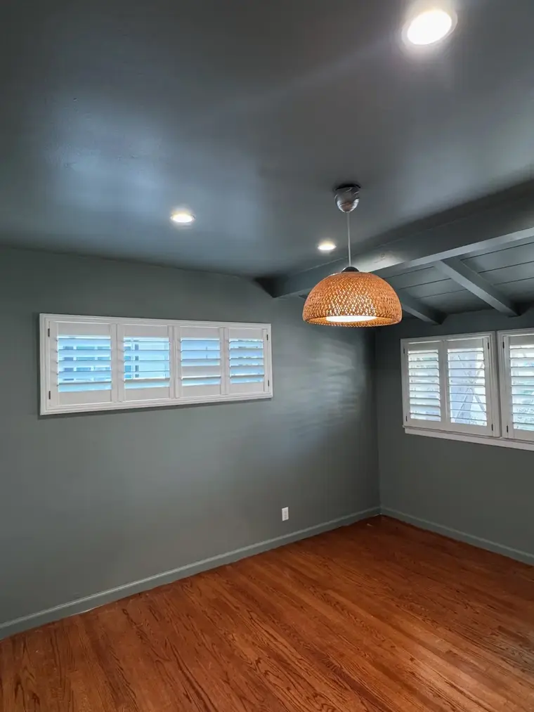
Scraped, sanded, sealed and painted to take the Valley sun.
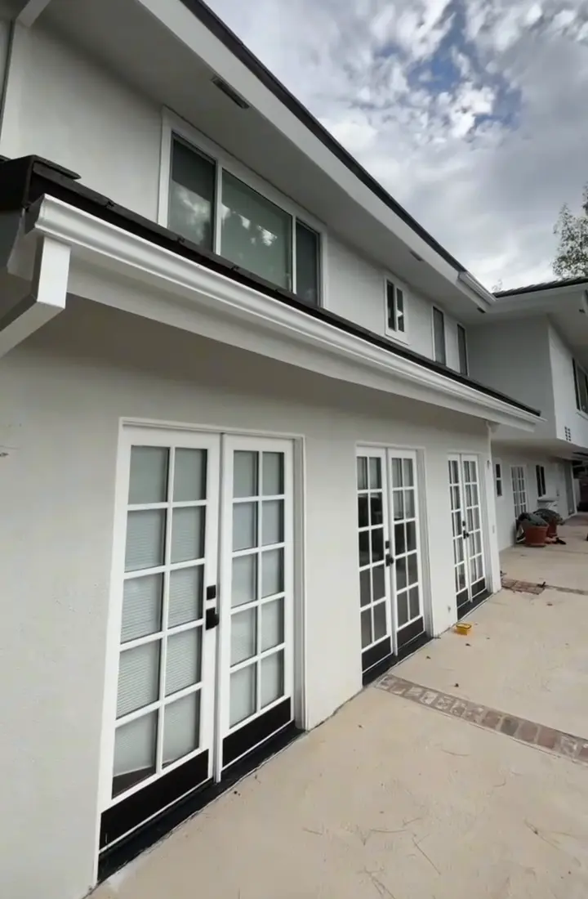
New stucco and patches that blend in so well you’ll forget the crack.
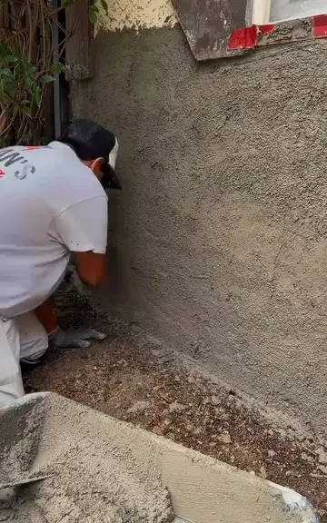
Smooth, hard-wearing finishes. A new kitchen feel without the new kitchen bill.
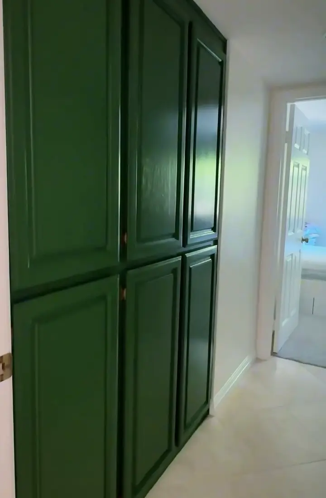
Scraped, skimmed and painted. Finally a ceiling that matches the house.
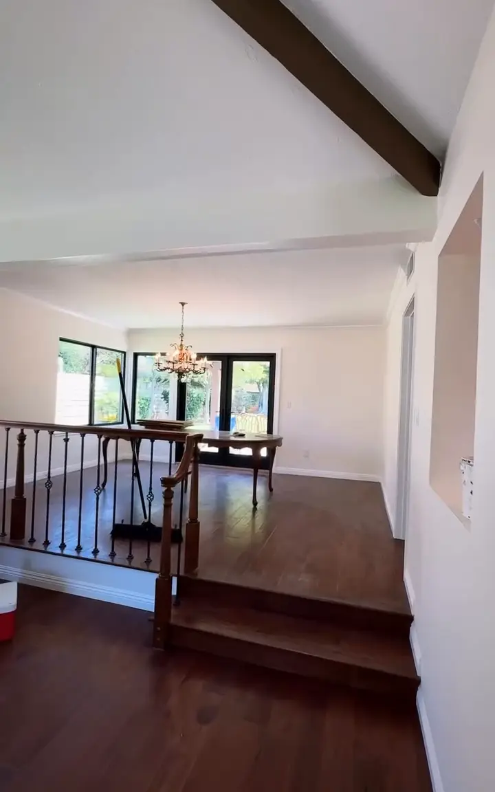
Rotten eaves and fascia replaced with new wood before any paint goes on.
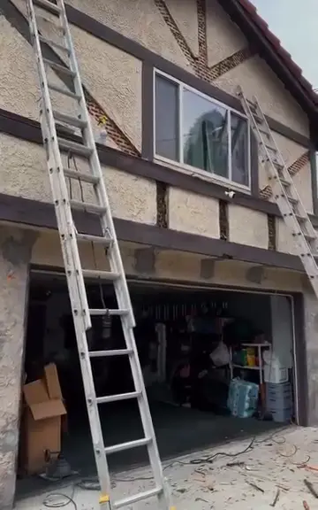
Dents and cracks fixed, then textured to match your walls.
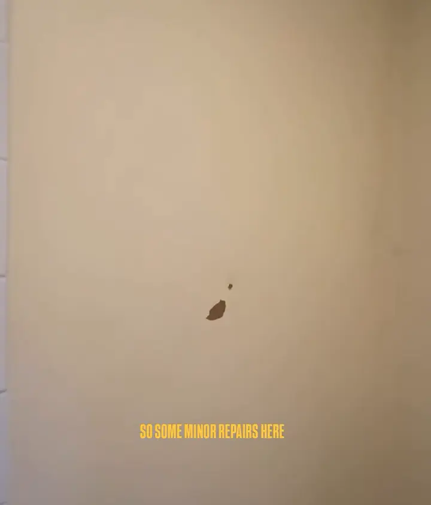
Warehouses, offices and units, on a schedule that keeps you open.
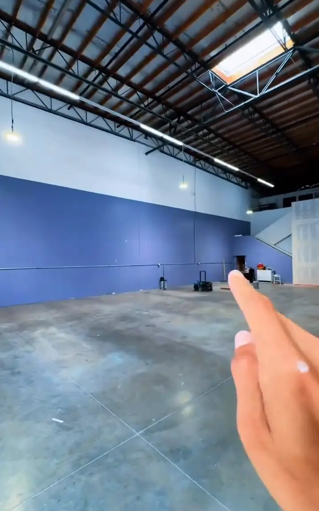
A whole-home refresh: crisp whites, a moody teal den, black French doors and a spa bath. Tap any photo.
No stock photos. Just us, working. Tap one for sound.
The paint is the easy part. The prep is where we earn our reviews.
We look at the surfaces, the repairs and the paint you want, and give you an honest number.
Floors, furniture, plants and windows covered before anything opens.
Scrape, sand, patch, caulk. Stucco and dry rot fixed now, not hidden under paint.
Quality Benjamin Moore coatings, sprayed or rolled, cut in by hand.
The site is left clean every day. We don’t leave until you love it.
Doarman’s is a family business. Armando runs the jobs and keeps you posted at every step. His dad, Armando Sr., is the drywall and stucco master our customers rave about.
The same family shows up, does the work and cleans up after. That’s why so much of our work comes from customers sending their friends and family.
“Armando and his team/family are truly one of a kind.”
Danielle D., Google review
“Absolutely the FINEST and MOST PROFESSIONAL and HONEST contractor and painter I have ever worked with.”
“This is the fourth time in 25 years that we’ve painted our house, and by far Armando and his crew provided the best experience of all.”
“The stucco patches blend perfectly, the worksite was cleaned each day, and the final product is exactly what we asked for.”
“Armando Sr. is a BOSS when it comes to drywall patching and stucco repair… so is Armando Jr.”
“Not many companies know how to do a great job of painting old homes. Ours is 102 years old!”
“They use high quality Benjamin Moore paints, give very reasonable estimates, and don’t cut corners.”
“The previous painter had left me in tears. Armando and his team gave my home back to me.”
“We’ve had the pleasure of working with Doarmans Painting many times over the past five years and have never been disappointed.”
“Their attention to detail, cleanliness and professionalism set them apart.”
“They kept the work space SO clean each day, and they delivered on exactly what we were hoping for.”
Free estimates across Canoga Park and the San Fernando Valley. Tell us about the job and Armando will reach out.
And the rest of the San Fernando Valley and Los Angeles. Not sure? Just ask.
Nope. Stucco, drywall, textures, popcorn ceiling removal, wallpaper removal and dry rot wood repair. We fix it first, then we paint it.
Paint quality, materials and prep. Higher tiers of paint cost more and last longer. We walk you through the options so you know exactly what you’re paying for.
Yes. California contractor licence #1008943, Painting and Decorating, with a $15,000 bond.
No. We cover everything before we start and clean up at the end of every day. It’s the thing our customers mention most.
Yes. Warehouses, offices and rental units, scheduled around your business.